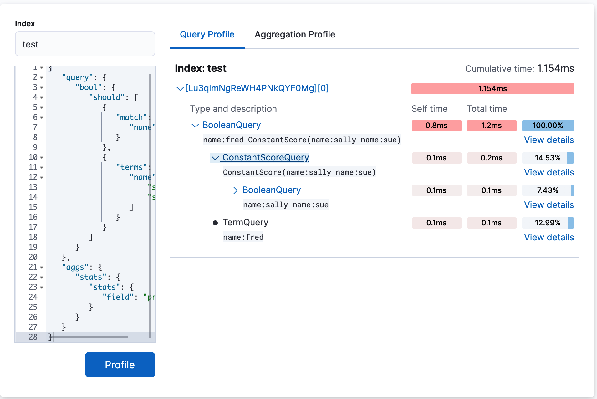
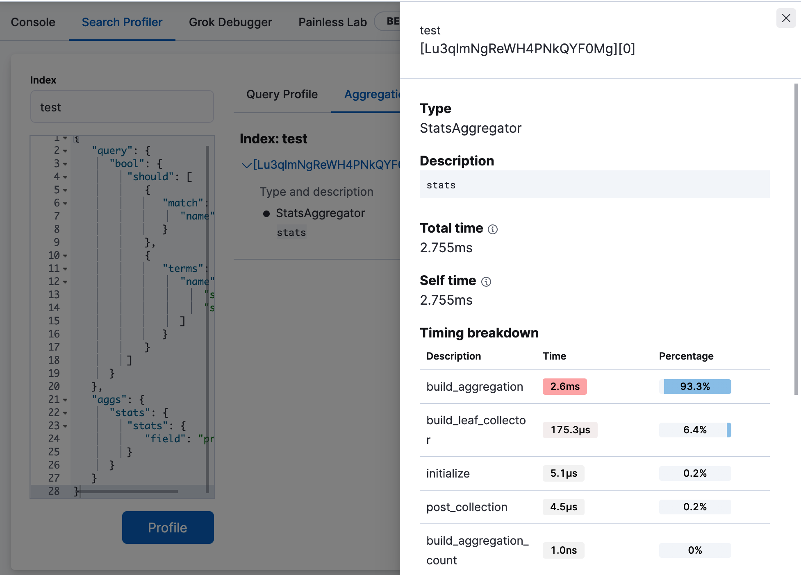

Profile queries and aggregations
editProfile queries and aggregations
editElasticsearch has a powerful Profile API that you can use to inspect and analyze your search queries. The response returns a large JSON blob, which can be difficult to analyze manually.
The Search Profiler tool can transform this JSON output into a visualization that is easy to navigate, allowing you to diagnose and debug poorly performing queries much faster.
Get started
editSearch Profiler is automatically enabled in Kibana. Open the main menu, click Dev Tools, and then click Search Profiler to get started.
Search Profiler displays the names of the indices searched, the shards in each index,
and how long it took for the query to complete. To try it out, replace the default match_all query
with the query you want to profile, and then click Profile.
The following example shows the results of profiling the match_all query.
If you take a closer look at the information for the .security_7 sample index, the
Cumulative time field shows you that the query took 0.028ms to execute.
The cumulative time metric is the sum of individual shard times. It is not necessarily the actual time it took for the query to return (wall clock time). Because shards might be processed in parallel on multiple nodes, the wall clock time can be significantly less than the cumulative time. However, if shards are colocated on the same node and executed serially, the wall clock time is closer to the cumulative time.
While the cumulative time metric is useful for comparing the performance of your indices and shards, it doesn’t necessarily represent the actual physical query times.
To see more profiling information, click View details. You’ll see details about the query components that ran on the shard and the timing breakdown of low-level methods. For more information, refer to Profiling queries.
Filter for an index or type
editBy default, all queries executed by the Search Profiler are sent
to GET /_search. It searches across your entire cluster (all indices, all types).
To query a specific index or type, you can use the Index filter.
In the following example, the query is executed against the indices .security-7 and kibana_sample_data_ecommerce.
This is equivalent making a request to GET /test,kibana_1/_search.
Profile a more complicated query
editTo understand how the query trees are displayed inside the Search Profiler, take a look at a more complicated query.
-
Index the following data via Console:
POST test/_bulk {"index":{}} {"name":"aaron","age":23,"hair":"brown"} {"index":{}} {"name":"sue","age":19,"hair":"red"} {"index":{}} {"name":"sally","age":19,"hair":"blonde"} {"index":{}} {"name":"george","age":19,"hair":"blonde"} {"index":{}} {"name":"fred","age":69,"hair":"blonde"} -
From the Search Profiler, enter test in the Index field to restrict profiled
queries to the
testindex. -
Replace the default
match_allquery in the query editor with a query that has two sub-query components and includes a simple aggregation:{ "query": { "bool": { "should": [ { "match": { "name": "fred" } }, { "terms": { "name": [ "sue", "sally" ] } } ] } }, "aggs": { "stats": { "stats": { "field": "price" } } } } -
Click Profile to profile the query and visualize the results.
-
The top
BooleanQuerycomponent corresponds to the bool in the query. -
The second
BooleanQuerycorresponds to the terms query, which is internally converted to aBooleanof should clauses. It has two child queries that correspond to "sally" and "sue from the terms query. -
The
TermQuerythat’s labeled with "name:fred" corresponds to match: fred in the query.If you look at the time columns, you can see that Self time and Total time are no longer identical on all the rows. Self time represents how long the query component took to execute. Total time is the time a query component and all its children took to execute. Therefore, queries like the Boolean queries often have a larger total time than self time.
-
The top
-
Click Aggregation Profile to view aggregation profiling statistics.
This query includes a
statsagg on the"age"field. The Aggregation Profile tab is only enabled when the query being profiled contains an aggregation. -
Click View details to view the timing breakdown.
For more information about how the Search Profiler works, how timings are calculated, and how to interpret various results, see Profiling queries.
Render pre-captured profiler JSON
editThe Search Profiler queries the cluster that the Kibana node is attached to. It does this by executing the query against the cluster and collecting the results.
Sometimes you might want to investigate performance problems that are temporal in nature. For example, a query might only be slow at certain time of day when many customers are using your system. You can set up a process to automatically profile slow queries when they occur and then save those profile responses for later analysis.
The Search Profiler supports this workflow by allowing you to paste the pre-captured JSON in the query editor. The Search Profiler will detect that you have entered a JSON response (rather than a query) and will render just the visualization, rather than querying the cluster.
To see how this works, copy and paste the following profile response into the query editor and click Profile.
{
"took": 3,
"timed_out": false,
"_shards": {
"total": 1,
"successful": 1,
"failed": 0
},
"hits": {
"total": 1,
"max_score": 1.3862944,
"hits": [
{
"_index": "test",
"_type": "test",
"_id": "AVi3aRDmGKWpaS38wV57",
"_score": 1.3862944,
"_source": {
"name": "fred",
"age": 69,
"hair": "blonde"
}
}
]
},
"profile": {
"shards": [
{
"id": "[O-l25nM4QN6Z68UA5rUYqQ][test][0]",
"searches": [
{
"query": [
{
"type": "BooleanQuery",
"description": "+name:fred #(ConstantScore(*:*))^0.0",
"time": "0.5884370000ms",
"breakdown": {
"score": 7243,
"build_scorer_count": 1,
"match_count": 0,
"create_weight": 196239,
"next_doc": 9851,
"match": 0,
"create_weight_count": 1,
"next_doc_count": 2,
"score_count": 1,
"build_scorer": 375099,
"advance": 0,
"advance_count": 0
},
"children": [
{
"type": "TermQuery",
"description": "name:fred",
"time": "0.3016880000ms",
"breakdown": {
"score": 4218,
"build_scorer_count": 1,
"match_count": 0,
"create_weight": 132425,
"next_doc": 2196,
"match": 0,
"create_weight_count": 1,
"next_doc_count": 2,
"score_count": 1,
"build_scorer": 162844,
"advance": 0,
"advance_count": 0
}
},
{
"type": "BoostQuery",
"description": "(ConstantScore(*:*))^0.0",
"time": "0.1223030000ms",
"breakdown": {
"score": 0,
"build_scorer_count": 1,
"match_count": 0,
"create_weight": 17366,
"next_doc": 0,
"match": 0,
"create_weight_count": 1,
"next_doc_count": 0,
"score_count": 0,
"build_scorer": 102329,
"advance": 2604,
"advance_count": 2
},
"children": [
{
"type": "MatchAllDocsQuery",
"description": "*:*",
"time": "0.03307600000ms",
"breakdown": {
"score": 0,
"build_scorer_count": 1,
"match_count": 0,
"create_weight": 6068,
"next_doc": 0,
"match": 0,
"create_weight_count": 1,
"next_doc_count": 0,
"score_count": 0,
"build_scorer": 25615,
"advance": 1389,
"advance_count": 2
}
}
]
}
]
}
],
"rewrite_time": 168640,
"collector": [
{
"name": "CancellableCollector",
"reason": "search_cancelled",
"time": "0.02952900000ms",
"children": [
{
"name": "SimpleTopScoreDocCollector",
"reason": "search_top_hits",
"time": "0.01931700000ms"
}
]
}
]
}
],
"aggregations": []
}
]
}
}
Your output should look similar to this: